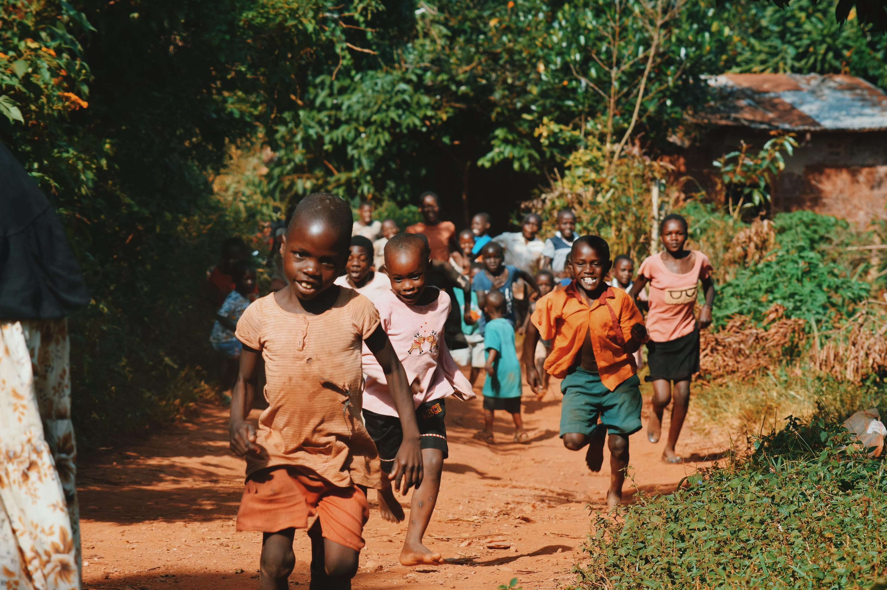

Save the children was founded in England in 1919 by Eglantyne Jebb. Since then they have expanded into 30 other countries around the world. Save the Children provide funds and assistance to improve children's health, education, and wellbeing, and to assist in emergencies.
